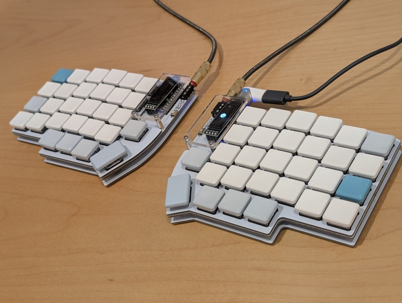
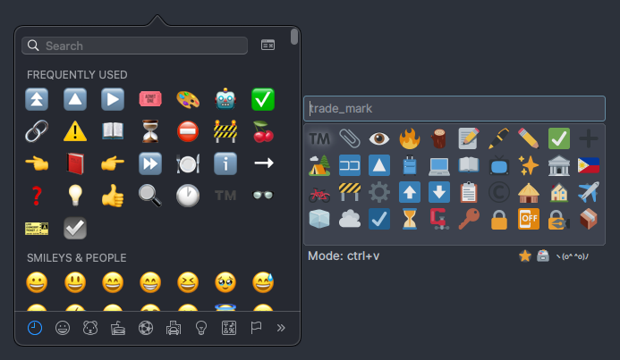
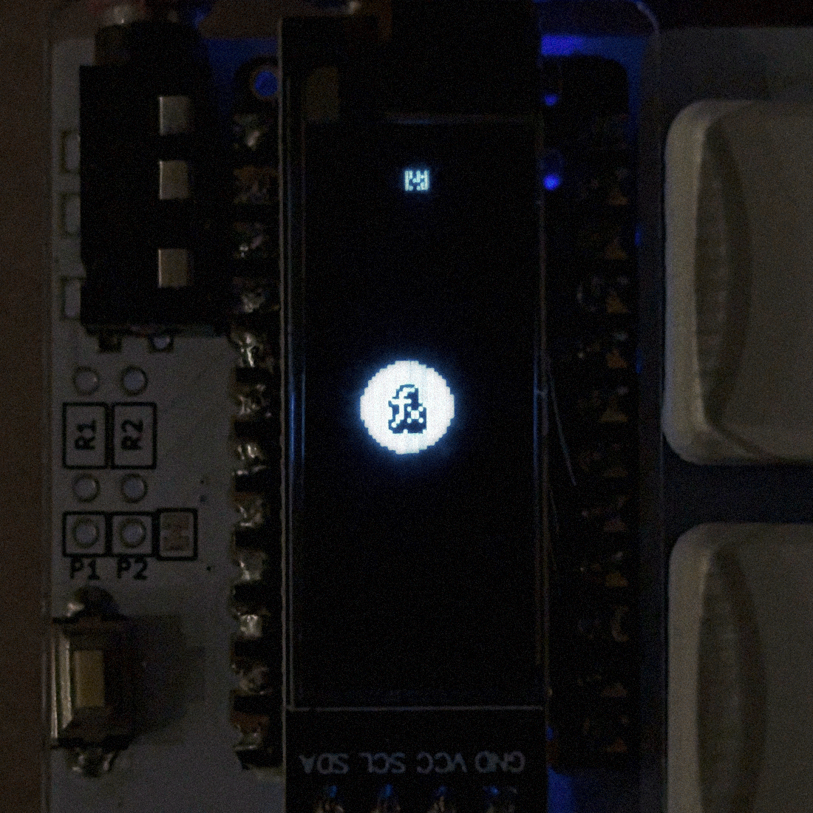
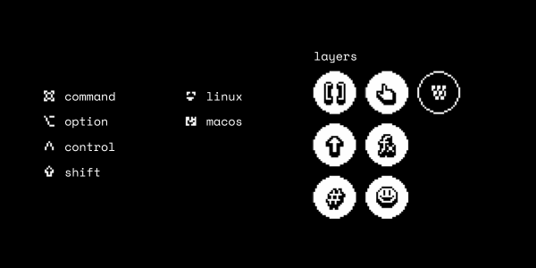
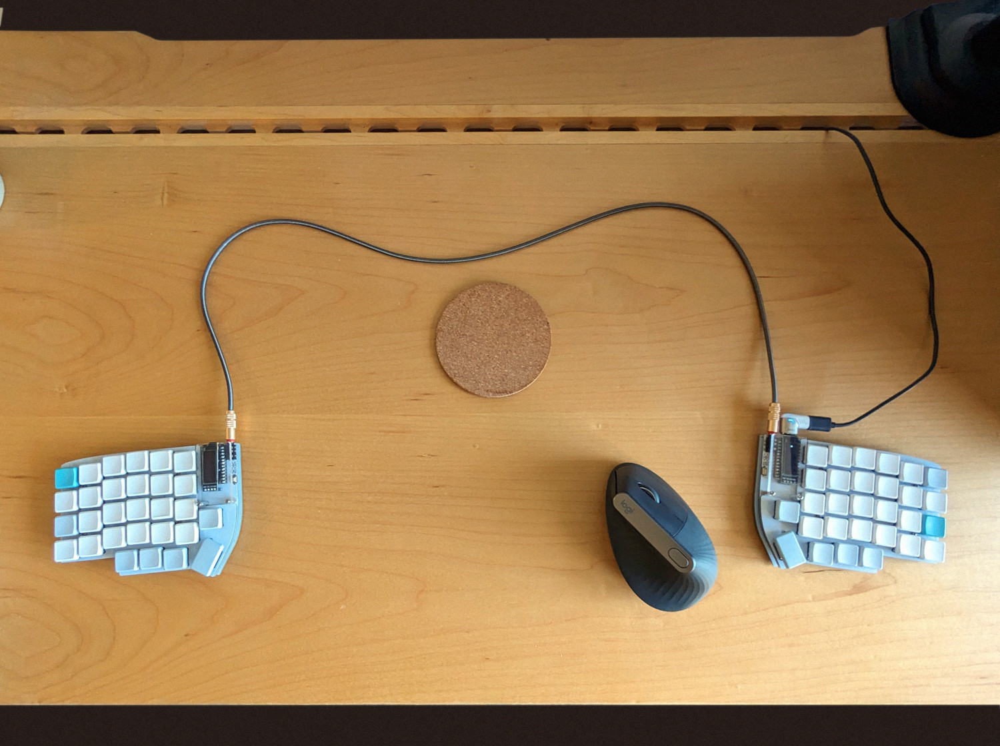

I’ve been using my Lily-58 split keyboard for more than a year now. It’s a compact 58-key split keyboard with column-staggered keys, 55% the size of a standard 104-key keyboard.
Thanks to the open-source firmware/framework QMK, I customised it and programmed it to my satisfaction. I figured now’s a good time to post about my layout so far.

The keyboard in question
Quick rundown
Hardware: Split keyboard with 58 keys in total. A 32×128 pixel OLED screen on each half. Both halves are connected by wire, and the whole thing is wired USB-C to the computer.
Software: It runs the QMK firmware, which I used to implement 7-8 layers and several custom functions. I customised the heck out of my keyboard’s firmware.
Interactive demo!
Here’s a detailed simulation of my keyboard with all its layers and macros. Play around with my keyboard in your browser!
Left hand
Right hand
The basics
The base layer of my keyboard is where most of the typing happens.
Largely in the middle lies the alphabet. Instead of the usual QWERTY layout, it’s in a layout called Colemak-DH. It took some time to get used to but I appreciate how easier it was for typing (in English), as the most common letters are in the home row.
Alphabetic input
The alphabet is flanked by the familiar Esc , ⌫ , ↵ , and Tab keys, only to be punctuated by some of the common punctuations.
The bottom row gives access to hidden layers which can be activated by holding down the layer L(*) keys. More on layers later.
Layer keys, Space ␣ bar, and primary modifiers Control/Command
The top row is where it gets interesting. Here we have single-key shortcuts.
Top row: shortcuts
On the left hand top row we have “universal” shortcuts for navigating within an application: Back, Forward, Previous tab, and Next tab.
Using the application navigation keys.
- ⌃[ - Back
- ⌃] - Forward
- ⌃⇧Tab - Previous tab
- ⌃Tab - Next tab
They’re compatible with most web browsers and code editors. Really handy when surfing the web or when tracing code across multiple files.
On the other hand, we have Wksp← and Wksp→ , shortcuts for switching between workspaces (a.k.a. spaces and virtual desktops in macOS and Windows, respectively).
Wksp↑ and Wksp↓ are bound to desktop-specific actions like Exposé in macOS. I don’t actually remember their exact purposes because they’re not consistent across OSes.
Home row modifiers
Tap/Hold dual purpose home row keys
The home row on the keyboard is where the fingers rest by default. As such, the home row on my keyboard serves a second purpose besides alphabetic input. Some of them can be held down to activate modifiers such as Control, Alt, and Super.
For example, the key a activates Shift when held down, while a tap produces the letter a.
Home row modifiers make keyboard shortcuts much more comfortable, in contrast to the awkward contortions you have to perform on regular keyboards.
This makes use of the Mod-Tap feature from the QMK framework, a.k.a. Tap/Hold keys.
The home row mods, among other things, were inspired by the famous Miryoku layout. Credits to Manna Harbour for designing the Miryoku layout.
Layers
I use layers due to the limited number of physical keys on the keyboard. Inputs such as numbers and symbols have to be organised into separate layers. I can switch between these layers either through dedicated layer keys or programmatically.
Here are the layers I ended up with:
- Alphabet (Default)
- Shifted alphabet (Uppercase)
- Symbols
- Navigation / manipulation
- Numbers
- Functions
- Emojis
Btw, the OLED screen is programmed to show the current layer.
Let’s dive into each layer in the following sections. 🤿
Shift layer
Click the highlighted ⇧ layer activation key above to toggle between the base diagram and the Shifted diagram.
The Shift layer is just a shifted or uppercase version of the base layer. You know, like when you hold Shift on a regular keyboard! This layer is activated by holding down the left Space key ␣ instead of the Shift key. It’s another Tap/Hold key. Tapping Space ␣ inputs a space character, while holding it activates the Shift layer.
Some of my shifted punctuations differ from their counterparts in a regular QWERTY keyboard. Like how ? shifts into ! , . to : , , to ; , etc…
I used this great Custom Shift Keys library from Pascal Getreuer to customise the shifted values.
Symbols
The Symbol layer is activated by holding the dedicated Symbol layer key L(s) with the left thumb. Matching the thumb, the symbols are laid out on the left-hand side only. The right-hand side defaults to home row mods.
There’s a bit of special programming that I added for this layer. The parentheses, brackets, braces, and angle brackets—the "enclosure" keys—have a nifty little shortcut in them for a smoother coding experience.
Caret repositioning in brackets
What it does exactly is it lets me automatically reposition the caret or cursor inside the brackets without the need for arrow keys. The arrow keys are on a separate layer, and layer-switching has an overhead.
The trigger for it is simple: if I still have the opening symbol’s key held down as I release the closing symbol’s key, it repositions. Otherwise, it types normally. This way I can control whether I want to quickly reposition or not.
Demo! You’ll need a keyboard for this.
To trigger caret repositioning, hold 1 , press 2 , release 2 , before releasing 1 . It’s a reversing motion, mirroring the cursor’s movements.
Navigation
The Navigation / manipulation layer provides the arrow keys, page navigation keys, and word navigation, all on the right side. Some text manipulation functions are here as well. This layer is especially useful when editing text.
On the home row sit the arrow keys. These probably are among the the most used keys ever.
Yes, the Up and Down arrows are in that order—opposite of Vim style. I think it’s more logical this way.
Above the arrow keys are the word navigation keys. These operate on words rather than individual letters.
The W← and W→ keys, for instance, let you move the cursor one word at a time.
Moving the cursor, one word at a time
Word navigation works by using a lesser-known feature native to most desktop operating systems, which does exactly that—jumping to the next or previous word. On macOS, it’s the keyboard shortcuts Option+Left and Option+Right. On Linux, Control+Left and Control+Right. Depending on the current OS, these shortcuts are mapped to the word navigation W← and W→ keys.
One of the other word keys is the Select Word WSel key, which selects the current word under the caret.
The Select Word key itself is just a macro. It’s composed of the following sequence of keystrokes:
- W←
- W→
- Hold
Shift
- W←
- Release
Shift
Which results in a selection spanning the nearest word boundaries around the caret. There are edge cases with this macro (literally), but they’re not that annoying. This macro has been extremely useful.
The Delete Word W⌫ key is just the Select Word macro + Backspace ⌫ .
These word navigation functions greatly increase text and code editing efficiency.
Numbers
This layer contains numbers and some arithmetic operators laid out like a numpad on the right hand side. Convenient when doing calculations. Nothing special here.
Functions
The Function layer contains “functions”, or things that do stuff instead of inputting text. Volume buttons, brightness buttons, media controls, you name it.
And of course, the Function keys themselves (i.e., F1, F2, F3, …, F12) can be accessed from this layer, but they’re a bit hidden. The Function keys are entered through the four bit keys FB0 , FB1 , FB2 , and FB3 in a bitwise manner.
To illustrate the Function keys’ bitwise input method, take F10 as an example. The number 10 equals 21 + 23, corresponding to bits 1 and 3. Therefore, to input F10, you simultaneously press the bit 1 key FB1 and the bit 3 key FB3 !
Demo! Here, the bit keys are mapped to QWER. You’ll need a keyboard for this.
More details and demos in this post about how the bitwise input works.
On the left side we have the OS switchers, providing the macOS & Linux modes. The selected OS determines a lot of things, such as the primary modifier (either Control or Command) and some desktop shortcuts.
I don’t use Windows, so I didn’t support it.
Finally, the QWERTY button. Its function should be obvious enough, but we’ll get to that later.
Emojis
Yep, an Emoji layer! 😃 ⬅ I typed that with my keyboard!And other useful Unicode symbols.
I mapped the emojis so they line up with the base layer. For instance, 🎉 is on the same position as p , which can stand for “party”. 👋 on w ave. 🤔 on t hink. ✔ on Enter, and so on. Meanwhile, the arrow symbols correspond to the arrow keys in the Navigation layer.
The Emoji layer works a bit differently. It’s a one-shot layer in QMK terms. That is, you don’t have to hold down the layer key L(e) to keep the layer active. It stays active until you select an emoji or you cancel. This allows the Emoji layer key to be tucked in the top corner without sacrificing comfort.
Being a one-shot layer also opens up the possibility of a new gesture, double tap. I’ve set it so that double tapping the Emoji key launches the desktop-level emoji picker for all of my other emoji needs.

macOS Character Viewer (left) and Linux-based emoji-picker (right)
On macOS, it’s Command+Control+Space to bring up Character Viewer. On Windows (hypothetically), that’d be Super+. for the “emoji keyboard”. On Linux there is no standard emoji picker, so I installed one and bound it to some arbitrary shortcut. I’m not liking how the Linux one looks, but it’s what it is.
OLED 📺

I drew and implemented my own graphics for the keyboard’s built-in 32×128-pixel OLED. You’ve seen some of them from the examples above. The OLED shows the current active layer, the current OS mode, and any active modifiers.

It has been a struggle to make legible tile graphics at a very low resolution, but I think they turned out fine for my purposes.
Layer lock 🔒
Sometimes it gets tiring to hold down a layer key for long. Like when browsing a web page, I would want to have Page Down and Page Up readily accessible.
Layer Lock to the rescue. I used another of Getreuer’s modular QMK libraries, the Layer Lock library, which was really easy to plug in.
Gaming mode / QWERTY 🎮
I play video games on my computer. Games almost always default to a QWERTY layout, and I couldn’t be bothered to remap the keybindings to my own keyboard layout.
Thus, QWERTY mode.
The interesting bit here is the Chat key, which temporarily activates the base layer for the purpose of chatting in-game. Upon sending a message (on Enter), it reverts back to QWERTY mode so I can get back to the action in no time.
It’s not perfect. When gaming with a mouse, I don’t have access to the right half of the keyboard, as it becomes either too far or inconvenient to reach. It’s a problem if, say, I needed to press the number 6 to activate the 6th item in my inventory.
Often I end up remapping keybindings anyway, just to fit them within the left half.
Interactive demo again!
Now that you know how to operate my keyboard, try the interactive demo again!
Demo tips:
- Long-press the left Space key ␣ to activate the Shift layer.
- Long-press the home row a, r, s, t, n, e, i, or o key to get modifiers.
- Swap OS-specific shortcuts and mods via the Linux and macOS keys in the Function layer.
- Advanced features like bitwise input is not implemented in this simulation. It can’t be used with a mouse anyway.
Link to standalone demo page
Conclusion
Programming my keyboard was definitely worth it. You see, I get wrist and upper back pain sometimes. Part of the job, I guess. It helps to have a split keyboard, so I can position my arms and hands in a natural position.
Ergonomics
In a regular keyboard, you kinda squeeze your hands together, and the wrists insists on twisting which plants the seeds of suffering and despair. That wouldn’t be a problem if each hand has its own separate half of the keyboard as in a split keyboard.

My desk setup.
The distance between both halves can also be w i d e n e d which, in turn, widens my shoulders and counters the slouch of the upper back. Fight the slouch, to fight the ouch. It also helps that overall finger movement is reduced, thanks to the customised keyboard layout.
Layout
It wasn’t easy adjusting to a completely new keyboard layout. I even made cheatsheetsfor my own reference. I only got comfortable with it after about 2 months of daily use. Today, I still don’t type as fast as I was before with QWERTY, and I don’t think I ever will be, but I choose comfort over speed. :)
A lot of people say they found it difficult to come back to a regular QWERTY keyboard (like when using a laptop away from their desks), but I did not find it difficult myself. Somehow, I retained my QWERTY muscle memory. I’m guessing it’s because I used a completely different layout, Colemak, on my split keyboard so my brain didn’t confuse it with my existing QWERTY pathways.
It’s also interesting that I struggled typing with QWERTY on this keyboard (I used QWERTY at first before trying Colemak). And that it was easier to learn Colemak than relearn QWERTY on this keyboard.
I think it’s like how you don’t confuse using a mouse with using a touchpad—they’re different pathways. So my advice is to use a completely different layout when trying out a new ortholinear or split keyboard.
Fun
There’s a fun aspect to it too. Well, if tinkering with a keyboard and optimising it is your idea of fun… I knew I was going to like having a programmable keyboard because of my experience with the Steam Controller which was a kind of a programmable controller in a sense. I might have overdone it with the layers, but in the end it works for me.
As a bonus, I get to practice my C programming skills!
tl;dr:
- Comfort 👍
- Speed ❌
- Efficiency ✅
- “Fun” ✅
- Coding practice ✅